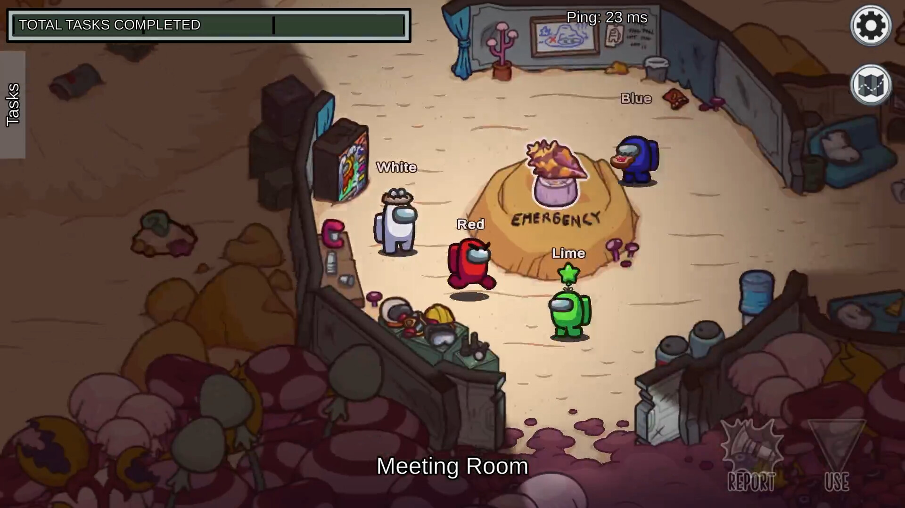
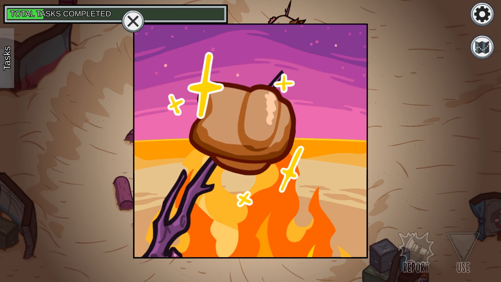
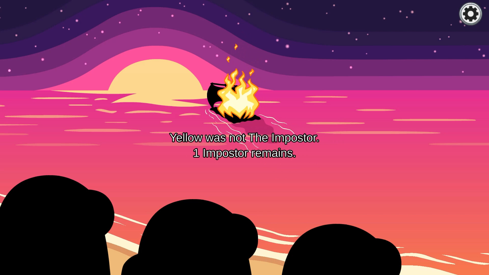
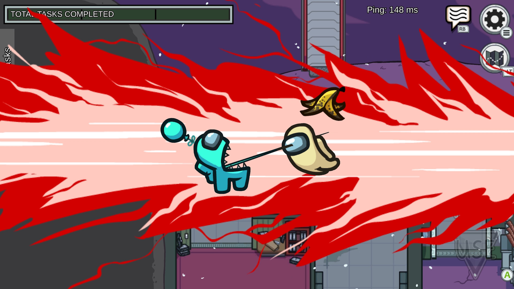
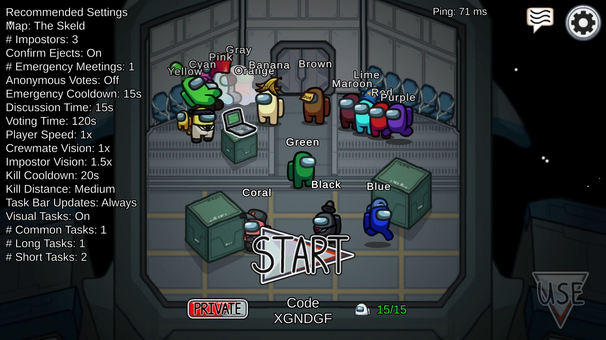
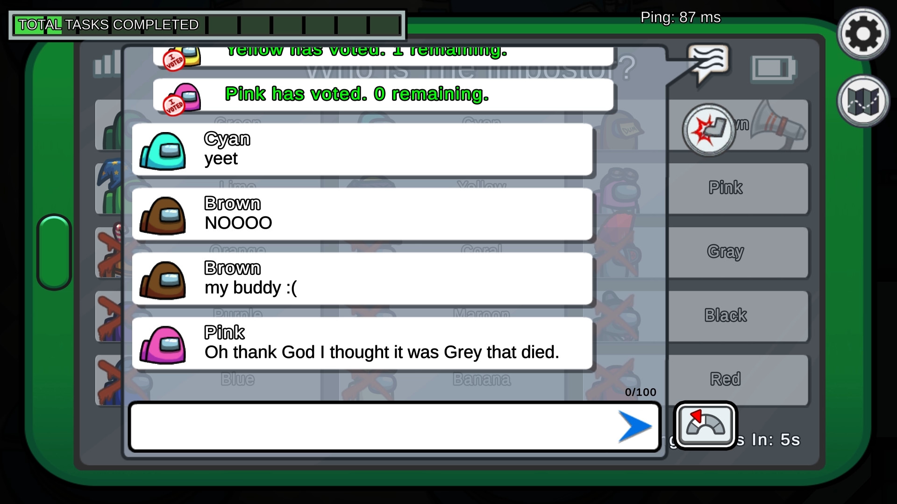

Among Us
v2026.8.181
Локальная и сетевая игра для компании от 4 до 15 игроков о командной работе и предательстве... в космосе!
- Разработчик
- Innersloth
- Издатель
- Innersloth
- Вышла
- 16 ноя. 2018 г.
- Жанр
- Казуальные игры
- Оригинал
- 1.2 ГБ
- Репак
- 532 МБ
Что в репаке
- Ничего не вырезано и не пережато
- Мультиплеер через OnlineFix
- Установщик на русском, с выбором папки и без навязанных ярлыков
- Сохранения не удаляются вместе с игрой - деинсталлятор спросит отдельно
Файлы в раздаче 6 шт. · 532 МБ
Among Us [NonSense Repack]532 МБ
- setup-1.bin54720ecfb279…529 МБ
- setup.exeb15ae56471d4…4 МБ
- SHA256SUMS.txt—341 Б
- SHA256SUMS.txt.asc—325 Б
- Проверить файлы.bat992b6cc1391a…2 КБ
- ПРОВЕРКА.txta71e971cec71…3 КБ
Рядом с каждым файлом стоит его отпечаток. Посчитайте такой же у себя и сравните: перезалить репак может кто угодно, а эту страницу правлю только я.
В самой раздаче лежат SHA256SUMS.txt и подпись к нему.
Как их проверить — в разделе
«О репаках».
Проверить файл можно с компьютера: откройте эту
страницу там и перетащите на неё скачанный setup.exe.
Перетащите сюда скачанный файл — проверю, мой ли он. Или нажмите, чтобы выбрать.
По одному файлу за раз, проще всего
setup.exe. Большой файл считается до минуты на гигабайт.
Никуда не отправляется — всё считается у вас в браузере.
Системные требования
Минимальные
- ОС: Windows 10 x32bit
- Процессор: INTEL i3-4330
- Оперативная память: 1 GB ОЗУ
- Видеокарта: INTEL HD Graphics 4600
Рекомендуемые
- ОС: Windows 10 x64bit
- Процессор: INTEL i3-4330
- Оперативная память: 4 GB ОЗУ
- Видеокарта: Nvidia GTX 650
Скриншоты





